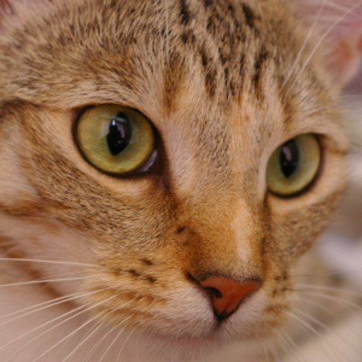
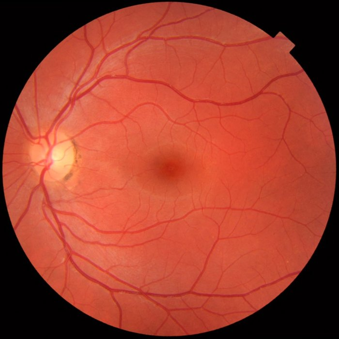
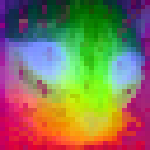
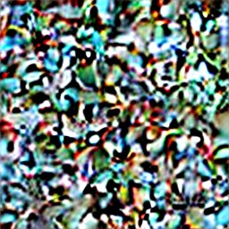
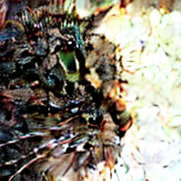
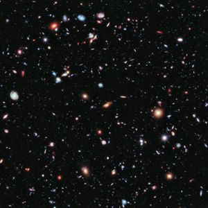
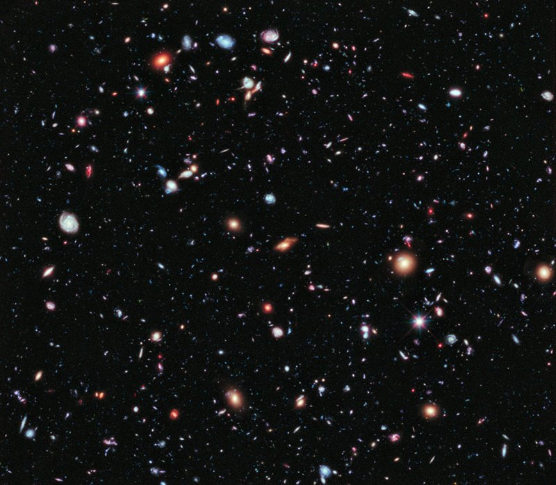

6 tokens · discrete · 1D
each token is one ID in a fixed vocabulary (GPT-2 tokenizer, ␣ = space)
224 × 224 × 3 = 150,528 numbers · continuous · 2D
no vocabulary, neighbouring pixels are highly redundant
| layers | width | heads | params | |
|---|---|---|---|---|
| ViT-B | 12 | 768 | 12 | 86M |
| ViT-L | 24 | 1024 | 16 | 307M |
| ViT-H | 32 | 1280 | 16 | 632M |
Nothing new inside: it is BERT’s encoder. Only the input changed.
| CNN | ViT | |
|---|---|---|
| locality, translation equivariance | built in | learned from data |
| pre-train on ImageNet-1k (1.3M) | better | worse (overfits) |
| pre-train on ImageNet-21k (14M) | similar | |
| pre-train on JFT-300M (303M) | good | better |
ImageNet top-1 after JFT-300M pre-training (ViT paper, Table 2)
pre-training cost: 2.5k vs 9.9k TPUv3-core-days
A stronger learner, a worse guesser: it assumes nothing, so it must be shown everything.

patch features, no labels: eyes, nose, fur get their own colours
a phrase in, a mask out
image ↔ caption scores (sigmoid)

→
→noise → “tabby cat”, denoised patch by patch
Patches as tokens won. The open question became: what do we train them on?
All images computed 2026-11-12 on CPU: DINOv2-S (DINOv3 weights are gated) · CLIPSeg as an open stand-in for SAM 3 (gated) · google/siglip2-base-patch16-224 · facebook/DiT-XL-2-256 (class 281, 20 steps)

1,000 classes; class 1,001 means retraining
281 “tabby” is as far from 282 “tiger cat” as from “rocket”
every class needs human annotation
| τ | cat | coffee | rocket | galaxies |
|---|---|---|---|---|
| 1 | 0.26 | 0.25 | 0.24 | 0.25 |
| 0.1 | 0.36 | 0.24 | 0.19 | 0.21 |
| 0.01 | 0.98 | 0.02 | 0.00 | 0.00 |
| Data | 400M (image, text) pairs from the internet; never released |
| Image encoders | 5 ResNets and 3 ViTs (B/32, B/16, L/14), + L/14 at 336 px |
| Text encoder | Transformer, 63M params, 12 layers, width 512, ≤ 76 tokens |
| Shared space | 512-d (B models) · 768-d (L/14) |
| Batch | 32,768 pairs · 32 epochs (≈ 12.8B pairs seen) |
| Compute | ViT-L/14: 12 days on 256 V100 · RN50x64: 18 days on 592 V100 |
The architecture is ordinary. Scale of data and batch is what makes it work.
Open replication: LAION-400M / LAION-5B datasets + OpenCLIP. Web data brings web biases, copyrighted and harmful content.
ImageNet top-1 accuracy
CLIP text encoder. Which caption is closer to “a photo of a cat”?
“a photo that is not a cat”
0.917
“a photo of a rocket”
0.821
| “a dog to the left of a cat” · “a cat to the left of a dog” | 0.986 |
| “a photo of three dogs” · “a photo of five dogs” | 0.914 |
“three dogs” ≈ “five dogs” (0.91)
“dog left of cat” ≈ “cat left of dog” (0.99)
“not a cat” lands next to “a cat” (0.92)
similar breeds, models, dishes are hard to tell apart

f(image, “a photo of a cat”)
0.29
compares two finished vectors; you must supply the candidate texts
f(image, “What is unusual here?”)
“The cat is staring straight at the camera, very close to the lens…”
open questions, free text, conversation
We already have a machine that writes text: an LLM. Can it read image tokens?
[576 × 1024] patch features → [576 × 4096] “visual tokens” in the LLM’s embedding space
Architectures differ mostly in the middle block.
✓ tiny (≈ 21M), simple
✗ long sequences
✓ short, fixed size; LLM frozen
✗ bottleneck can drop detail
✓ few-shot, many images
✗ ≈ 10B new params, LLM modified
✓ one model, simplest pipeline
✗ the LLM must learn vision itself
Open models mostly use the MLP (e.g. Qwen3-VL, 2025); in 2026 some drop the encoder entirely. One slide each →
595K image–caption pairs (filtered CC3M). Task: write the caption.
The projector learns to “speak” the LLM’s embedding language.
158K multimodal conversations: USER: <image> question → ASSISTANT: answer
Connects the LLM’s existing chat skills to the image.
Loss in both stages: plain next-token prediction on the answer text.
a strong LLM knows what good visual conversations look like
its mistakes and priors become training data (hallucinations included)
Fluent ≠ grounded. Counting fails, as in CLIP.
Bigger VLMs do much better, but object hallucination and counting remain classic failure modes.
| Model | Input | Image tokens |
|---|---|---|
| LLaVA (CLIP ViT-L/14) | 224 × 224 | 256 |
| LLaVA-1.5 | 336 × 336 | 576 |
| LLaVA-NeXT (Jan 2024, “AnyRes” tiles) | up to 672 × 672 | up to 2,880 |
| SmolVLM-256M on our cat (tiles) | 451 × 300 | 832 |
| Qwen3-VL (patch 16, 2 × 2 merge) | 1024 × 1024, native | ≈ 1,024 |
More pixels → better OCR and small details, but a longer context. Merging and tiling are where VLMs trade quality for cost.
three pre-trained parts, glued by ≈ 21M parameters
2B → 235B-A22B, Apache-2.0, 256K context; ViT features injected into several LLM layers (DeepStack)
raw 48 × 48 patches → one matrix multiply → LLM hidden size, + learned x / y positions. The LLM does all the vision.
Look familiar? It is ViT’s patch embedding (section 01), feeding the language model directly.
16 × 16 patch → linear → token. Then a standard Transformer. Needs lots of data.
Contrastive (CLIP) or sigmoid (SigLIP) training puts images and text in one space: search and zero-shot for free. Counting, order, negation not included.
Vision encoder → projector → LLM, trained by next-token prediction. Fluent is not grounded: check the answers.